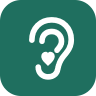

한마음 데스크
원장님 화면
보내기
닫기
보내기
사진 붙이기
캡처는 Ctrl+V 로 붙여 넣어도 돼요. 닫아도 적던 글은 남아 있어요.
닫기
보내기
처음 오셨어요? 이렇게 생겼어요
화면 아래(PC는 왼쪽)에 메뉴가 있어요. 막히면 「대화」에 적어 주세요.
다시 보지 않기
시작할게요
알림
새 답·할 일이 오면 알려 드려요.
폰 알림 켜기
화면 스타일
보는 사람마다 골라요 — 이 기기에 남고, 같은 이름으로 여는 다른 기기에도 따라가요.
화면 안내 다시 보기
닫기
캡처는 Ctrl+V · 파일은 화면에 끌어다 놓기